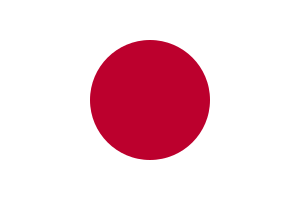
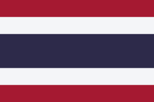
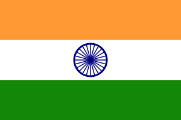

La compétition
Quarts de finale, demi-finales et grande finale : tout le parcours des équipes.
Le règlement
Chaque match oppose deux nations. Les deux équipes cuisinent leur plat devant un jury de 12 chefs qui donne une note sur 20 (goût, présentation, originalité). La meilleure note se qualifie pour le tour suivant. À partir des demi-finales, le vote du public compte pour 30 % de la note finale.
Le tableau final
Quarts de finale
14 novembre 2026
Italie17,5
Pérou16
14 novembre 2026
Maroc18
France17,5
15 novembre 2026
Japon18,5
Nigeria16,5
15 novembre 2026
Thaïlande17,5
Inde17
Demi-finales
5 décembre 2026
Italie-
Maroc-
6 décembre 2026
Japon-
Thaïlande-
Finale
20 décembre 2026
Vainqueur demi 1-
Vainqueur demi 2-
Le calendrier
| Date | Phase | Match | Lieu | Statut |
|---|---|---|---|---|
| 14/11/2026 | Quart 1 | Italie - Pérou | Lyon | Terminé |
| 14/11/2026 | Quart 2 | Maroc - France | Lyon | Terminé |
| 15/11/2026 | Quart 3 | Japon - Nigeria | Marseille | Terminé |
| 15/11/2026 | Quart 4 | Thaïlande - Inde | Marseille | Terminé |
| 05/12/2026 | Demi 1 | Italie - Maroc | Bordeaux | À venir |
| 06/12/2026 | Demi 2 | Japon - Thaïlande | Bordeaux | À venir |
| 20/12/2026 | Finale | À déterminer | Paris | À venir |
Le classement général
Cliquez sur le titre d'une colonne pour trier le tableau.
| Rang ⇅ | Nation ⇅ | Continent ⇅ | Plat | Note du jury ⇅ | Votes du public ⇅ |
|---|---|---|---|---|---|
| 1 |  Japon |
Asie | Sushis | 18,5 | 412 |
| 2 |  Maroc Maroc |
Afrique | Tajine de poulet | 18 | 389 |
| 3 |  Thaïlande |
Asie | Pad thaï | 17,5 | 301 |
| 4 |  France France |
Europe | Bœuf bourguignon | 17,5 | 356 |
| 5 |  Italie Italie |
Europe | Pizza napolitaine | 17,5 | 398 |
| 6 |  Inde |
Asie | Butter chicken | 17 | 274 |
| 7 |  Nigeria Nigeria |
Afrique | Jollof rice | 16,5 | 215 |
| 8 |  Pérou Pérou |
Amérique | Ceviche | 16 | 187 |